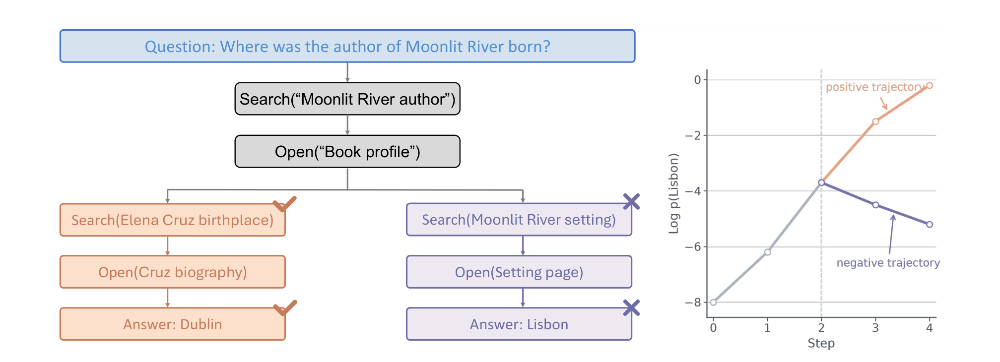
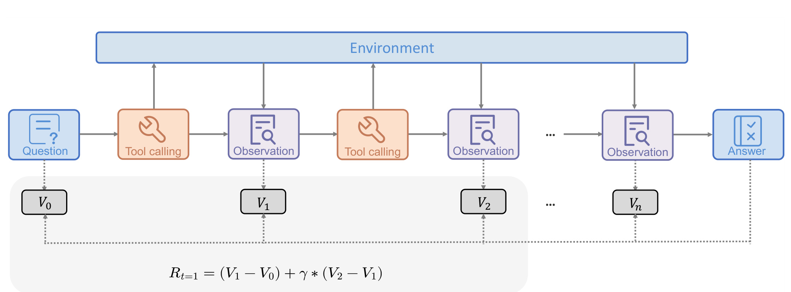
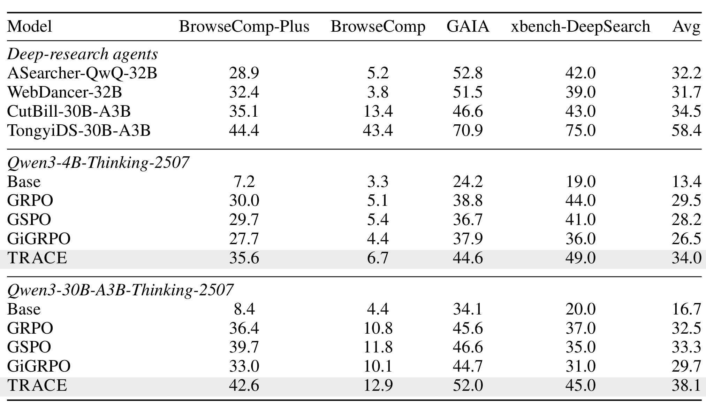
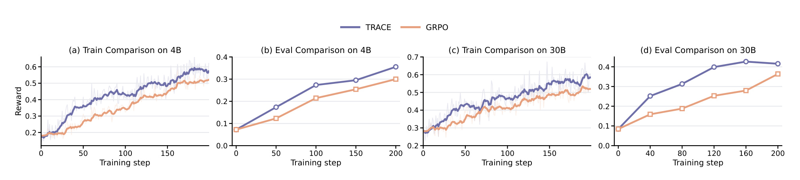
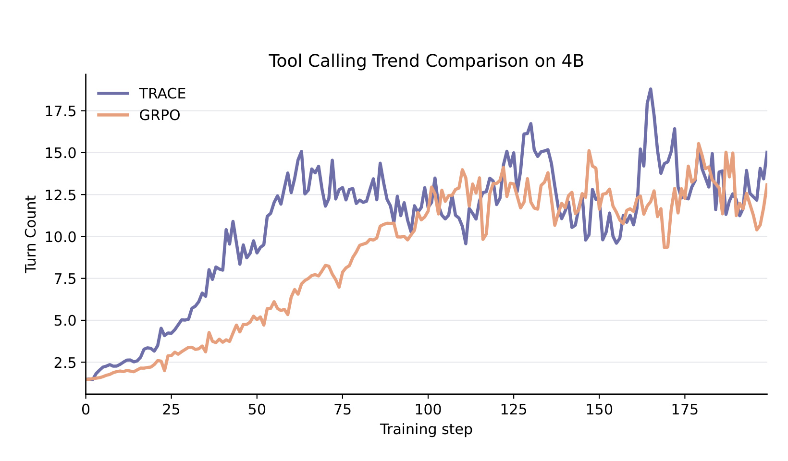
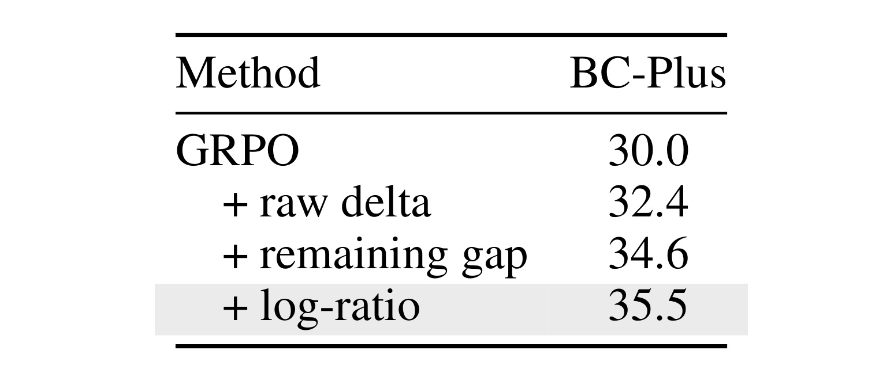
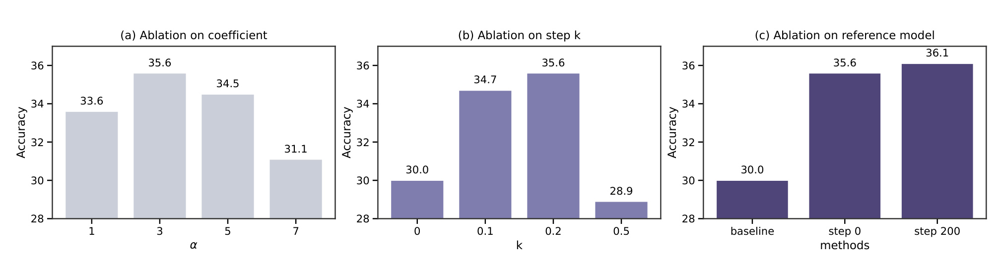
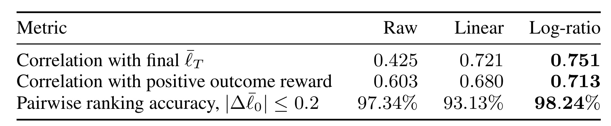

TRACE：通过信用估计为长时程 Agent 分配逐轮奖励
论文 TRACE: Turn-level Reward Assignment via Credit Estimation for Long-Horizon Agents 由 Leitian Tao、Baolin Peng、Wenlin Yao、Tao Ge、Hao Cheng、Mike Hang Wang、Jianfeng Gao 与 Sharon Li 完成，一作主机构为威斯康星大学麦迪逊分校，合作机构为 Microsoft Research。论文于 2026 年 7 月 15 日公开在 arXiv:2607.13988，研究对象是需要连续搜索、打开页面、定位文本并最终回答问题的长时程工具 Agent。TRACE 的核心不是再训练一个 critic，也不是让更强模型逐步打分，而是用冻结参考模型衡量“当前轨迹前缀已经让标准答案变得多容易预测”，再把相邻前缀的变化转成逐轮信用。论文和已核验 PDF 中未发现与本文一一对应的独立代码或项目页。
当 Agent 的轨迹延长到数十乃至上百次工具调用时，单一终局奖励既稀疏又高方差：一次最终失败会把此前真正收集到关键证据的动作一并判负，而一次最终成功也可能把冗余搜索误当成有效贡献。核心缺口是，如何在不引入步骤标注、强 judge 或额外过程奖励模型的前提下，识别每次工具交互究竟让答案更近还是更远。
1. 背景和问题
1.1 终局正确不等于每一步都正确
可验证奖励强化学习在数学、代码等单轮任务上很自然：模型给出一个相对紧凑的答案，程序检查器判断对错，终局 reward 就能提供清晰监督。长时程 Agent 的结构却不同。一个搜索 Agent 可能先改写查询，再查看若干候选页面，随后在页面内定位关键词，回退后重新搜索，最后才生成答案。终局 verifier 只能说明整条轨迹是否成功，不能回答哪个 query 找到了关键实体、哪个 open 暴露了决定性证据、哪个 find 只是重复确认，也不能指出最后一次错误跳转是否毁掉了此前已经完成的大部分工作。
常见的 outcome-only GRPO 会把同一条轨迹的组相对 advantage 施加到整段策略输出。成功轨迹里的所有动作因而容易一起获益，失败轨迹里的所有动作也容易一起受罚。轨迹较短时，这种近似尚能工作；轨迹增长后，同一 advantage 覆盖的决策越来越异质，梯度方差随之增大。更关键的是，失败与“全程无价值”并非同义：一次失败可能已经完成实体消歧、检索到正确文档并读出证据，只是在最后组合答案时犯错。反过来，一次成功也可能夹杂无效搜索、误开页面或碰巧命中，若一律给予正向信用，模型会学到拖长轨迹也能分享终局收益。

Figure 1 用一个虚构搜索问题把矛盾画得很清楚。共同前缀先搜索书名作者并打开书籍资料，随后分成两条分支：左侧继续搜索作者出生地并得到正确答案，右侧转而搜索故事发生地并得到错误答案。右侧轨迹虽然最终失败，但前两个共同动作确实缩小了问题范围；若只看终局结果，它们会和后续错误分支一起被判负。右侧曲线还显示，前缀在前两步已经让标准答案的 log probability 明显上升，只是之后又下降。TRACE 想利用的正是这种“先接近、后偏离”的局部结构：工具边界之前和之后分别估值，增长对应正信用，停滞接近零，偏离则为负，而不是把整条轨迹压成一个符号。曲线纵轴是标准答案的对数概率而非人工步骤分，因此图中分叉既表达了行为路径，也直接对应后续价值定义所使用的观测量。
1.2 为什么不能直接用过程奖励模型
最直接的细粒度方案是收集逐步标签、训练 process reward model，或让强 LLM judge 判断每次工具调用是否合理。但这些路线把问题转移到了另一个监督系统：需要高质量步骤标注，需要额外模型和推理成本，还可能让过程分数偏离最终可验证正确性。对搜索轨迹尤其如此，一个 query 当下看似没有答案，却可能为下一次 open 提供必要候选；judge 若只看局部自然语言合理性，未必能判断它对标准答案的真实贡献。Monte Carlo continuation 可以从某个中间状态继续采样并估计成功率，但长轨迹下成本很高，也会引入额外采样噪声。
TRACE 选择了更受约束的代理目标：训练数据已有 gold answer，因此可询问一个冻结语言模型，在给定轨迹前缀后生成这个答案的平均对数概率是多少。若新 observation 带来了相关证据，标准答案通常会更易预测；若观察无关或误导，答案概率可能不变或下降。这个信号不等于语义意义上的“动作质量”，但它和最终答案有明确联系，而且冻结后不会随策略更新漂移。论文把工具调用边界视为状态切分点，是因为每个边界恰好包住“一次策略动作加一次环境反馈”，能够把信用落到可控的交互单元上。
问题的边界也因此很明确。该代理最适合短、已知、可验证的答案；若任务输出是多文件代码补丁、长报告、开放式对话或存在大量等价表达，gold-output likelihood 可能无法稳定表示进度。论文的主张应理解为：在长时程深度搜索这一类 verifier 可靠、答案紧凑的任务中，能否用 answer readiness 构造无需额外 critic 的稠密信用；它并未证明相同估值能直接覆盖所有 Agent 任务。
从训练设计看，TRACE 还试图区分两个常被混在一起的问题：一是“这条 rollout 最终是否值得强化”，二是“rollout 内哪一次交互值得强化”。前者由 exact-match verifier 和组相对 outcome advantage 负责，后者由前缀价值差负责。若只使用第二种信号，模型可能追逐参考模型易预测的答案而忽略真实正确性；若只使用第一种信号，又回到长轨迹内无法定位贡献的困境。论文后续所有公式和消融都围绕这项分工展开，而不是把稠密代理奖励当作新的任务目标。
2. 方法
2.1 工具调用边界与冻结参考模型评分
TRACE 延续 KL 正则化 Agent 强化学习的基本目标。策略模型在问题、工具集合与环境交互条件下采样完整轨迹，奖励仍以最终可验证结果为锚，同时约束新策略不要过度偏离参考策略。先明确这个共同目标，才能看清 TRACE 新增的是轨迹内部的 credit，而不是另起一套任务正确性标准：
符号解释：\(\pi_\theta\) 是待优化策略；\(x\sim\mathcal D\) 是训练问题；\(\mathcal T\) 是可用工具集合；\(\tau\) 是完整交互轨迹；\(r_\phi\) 是奖励函数；\(\pi_{\mathrm{ref}}\) 是参考策略；\(\beta_{\mathrm{KL}}\) 控制 KL 约束强度。TRACE 不改变“最终正确性仍由 verifier 决定”这一框架，它改变的是中间动作如何获得 advantage。论文实现中 KL loss 设为 0，但该式仍给出了方法所在的标准 RL 语境。一条 Agent 轨迹同时包含策略动作、环境 observation 与最终答案，论文因此把联合概率拆成工具交互和答案生成两段：
符号解释：\(\mathcal R=((a_1,o_1),\ldots,(a_{T_R},o_{T_R}))\) 是工具交互序列；\(a_k\) 是第 \(k\) 次由策略生成的动作；\(o_k\) 是环境返回；\(H_k\) 是动作前历史；\(y_t\) 是最终答案 token；\(P_{\mathrm{env}}\) 是环境转移。训练梯度只穿过 assistant 生成的动作与答案 token，工具返回是外部状态，必须 mask。这个拆分解释了为什么“每个工具调用及其 observation”是信用单元，而不是给环境文本本身反向传播。接下来以标准一步 TD 误差为出发点：
符号解释：\(s_t\)、\(s_{t+1}\) 是相邻状态；\(V\) 是状态价值；\(r_t\) 是即时环境奖励；\(\gamma\) 是折扣因子；\(\delta_t\) 表示实际转移相对当前估值带来的增量。长搜索轨迹通常没有中间环境 reward，令 \(r_t=0\) 且 \(\gamma=1\) 后，关键就变成如何得到可靠的 \(V(s)\)。TRACE 不学习 critic，而是从答案概率构造这个价值：对第 \(k\) 个工具边界前缀 \(S_k\)，冻结参考模型计算 gold answer 的平均 token log-probability：
符号解释：\(y^\star\) 是标准答案；\(|y^\star|\) 是其 token 数；\(y_t^\star\) 是第 \(t\) 个答案 token；\(S_k\) 包含问题与前 \(k\) 组动作、观察；\(\pi_{\mathrm{ref}}\) 是策略初始化的冻结副本；\(\bar\ell_k\) 是长度归一化后的答案可预测性，数值越接近零说明当前前缀越足以支持标准答案。所有前缀可在一个 batch 中评分，参考模型只前向计算，不参加优化。因此 TRACE 的“价值模型”不是另一个会随训练漂移的 judge，而是一个固定的条件概率探针。

Figure 2 展示了完整信息流。上方是 question、tool calling、observation 与 answer 的时间序列，环境只在工具交互处回传 observation；下方在问题初态和每次 observation 后建立 \(V_0,V_1,V_2,\ldots,V_n\)。一次工具动作的价值不是单独由动作文本决定，而是比较动作加返回内容前后的前缀。图中的示例奖励把相邻价值差以及折扣后的后续差组合起来，说明早期 search 的作用可能要等后续 open 才显现。训练时这些 turn credit 再与轨迹级 outcome advantage 混合；推理时整套参考模型评分链路被移除，只运行更新后的 Agent，因此不会新增在线 critic 服务。
2.2 Log-ratio 状态价值与一步 TD 信用
直接用 \(\bar\ell_{k+1}-\bar\ell_k\) 有尺度问题。假设两个动作都让平均 log-probability 增加 \(0.1\)：当剩余 gap 从 \(5.1\) 降至 \(5.0\) 时，这只是很小比例的进展；当 gap 从 \(0.2\) 降至 \(0.1\) 时，却消除了一半不确定性。TRACE 先定义剩余 gap，再用相对闭合比例构造状态价值：
符号解释：\(d_k\) 是前缀 \(S_k\) 距离“高概率生成标准答案”的剩余 gap；\(\epsilon>0\) 防止分母接近零；\(d_0\) 是初始问题状态的 gap；\(V(S_k)\) 衡量相对初始状态已经闭合了多少 gap。由定义可知 \(V(S_0)=0\)，价值越大表示证据积累越充分。对数变换既保留相对比例，又避免线性 \(1/d_k\) 在 gap 很小时过度爆炸；但 \(\epsilon\) 仍是数值与灵敏度边界，需要用训练消融检查。由此，相邻状态的一步 turn credit 写成：
符号解释：\(\delta_k\) 分配给使 \(S_k\) 变成 \(S_{k+1}\) 的第 \(k+1\) 次动作与 observation；\(T\) 是工具交互总数。若一次转移把剩余 gap 减半，\(\delta_k=\log2\)；gap 不变则信用为零；答案变得更难预测则为负。右侧求和式是关键性质：中间项望远镜消去，累计一步信用只依赖初态与末态。模型不能通过插入许多零价值调用来凭空增加总 credit，这使 log-ratio 形式比一般的稠密 shaping 更不容易奖励轨迹填充。
需要注意，参考模型看到的是标准答案，因此该信号只用于训练。它并不意味着推理时 Agent 已知答案，也不等于每个正 \(\delta_k\) 都是人类意义上的完美行动。某段无关文本若碰巧提高参考模型对答案 token 的偏好，仍可能获得正信用；某个必要但暂时增加不确定性的探索动作也可能先为负。后续 K-step backup 正是为缓解“收益晚一两步显现”而设计。
2.3 K 步延迟信用与终局结果锚定
浏览器 search 常只返回候选标题，真正证据要到下一步 open 或 find 才出现。若只把 \(\delta_k\) 归给产生该 observation 的当前动作，早期检索可能得不到延迟收益。TRACE 为每个 turn 构造长度至多为 \(K\) 的归一化折扣窗口：
符号解释：\(g\) 表示同一问题下的第 \(g\) 条 rollout；\(k\) 是当前 turn；\(h_{g,k}\) 是窗口末端；\(K\) 是 look-ahead horizon；\(\gamma_{\mathrm{td}}\) 是延迟信用折扣；\(Z_{g,k}\) 用于归一化；\(c_{g,k}^{(K)}\) 是局部进度 credit。报告设置为 \(K=3\)、\(\gamma_{\mathrm{td}}=0.8\)，意味着当前动作可吸收随后两个转移的部分进展，但不会无限回传。归一化使靠近轨迹结尾、窗口较短的 turn 与中部 turn 更可比。窗口触达轨迹终点时，方法再加入终局结果填充：
符号解释：\(r_{g,k}^{\mathrm{turn}}\) 是最终逐轮奖励；\(\mathbf1[\cdot]\) 是指示函数；\(\lambda_{\mathrm{term}}\) 控制终局填充强度；\(A_g^{\mathrm{out}}\) 是由终局 reward 在同组 rollout 中标准化得到的 GRPO advantage。只有 look-ahead 窗口已经覆盖到最后一个工具转移时，终局信号才填入当前 turn；指数 \(T_g-k\) 把最终答案生成视作工具观察之后的额外转移。这样，局部 answer-readiness 进度与最终可验证正确性不会混为同一个量。
K-step 传播是 TRACE 最需要克制的部分：一步 log-ratio 信用具有严格端点望远镜性质，但扩大窗口和加入 terminal fill 会主动牺牲纯端点形式，以换取延迟信用和最终结果锚定。 若 \(K\) 太大，后续无关 turn 的变化会被分给当前动作；若 \(\lambda_{\mathrm{term}}\) 或折扣设置不合适，局部 credit 又可能退化成较模糊的轨迹级信号。论文的超参数消融确实观察到最大测试传播设置显著下降，这不是纯理论担忧。
2.4 Outcome 与 turn credit 的联合策略优化
TRACE 没有对 turn value 做跨 rollout 的 group normalization，而是把局部信号直接作为辅助 advantage，与标准 outcome advantage 混合。这样既保留同 prompt 多条 rollout 的终局相对排序，又让每个工具动作 token 接收到自己所属 turn 的局部进度：
符号解释：\(t\) 是策略生成 token 的索引；\(\mathrm{turn}(t)\) 把工具动作 token 映射到所属 turn；\(\alpha_{\mathrm{out}}\) 与 \(\alpha_{\mathrm{turn}}\) 分别控制终局和逐轮信号权重；\(\hat A_{g,t}\) 是送入策略梯度的混合 advantage。报告主要设置为 \(\alpha_{\mathrm{out}}=1.0\)、\(\alpha_{\mathrm{turn}}=0.2\)。环境 observation 不计算 loss，最终答案 token 使用 outcome 组件及附录所述 answer-tail 权重。这个设计保证 turn credit 服务于“哪个工具动作值得加强”，而不是让参考模型取代终局判定。最终仍使用 clipped GRPO 风格目标：
符号解释：\(G\) 是同一 prompt 的 rollout 数；\(I_g\) 是第 \(g\) 条轨迹中参加策略梯度的 assistant token 集；\(\rho_{g,t}=\pi_\theta(a_{g,t}\mid s_{g,t})/\pi_{\mathrm{old}}(a_{g,t}\mid s_{g,t})\) 是新旧策略概率比；\(c_-\)、\(c_+\) 是非对称 clipping 边界；\(J_{\mathrm{TRACE}}\) 是最大化目标。论文训练使用每 prompt 8 条 rollout、global batch size 128、学习率 \(10^{-6}\)，下界 clip 0.20、上界 clip 0.28。训练完成后，部署的只是 \(\pi_\theta\)；冻结参考模型、gold-answer 批量评分、TD credit 和混合 advantage 都不在推理链路上。
3. 实验结果
3.1 数据、环境与对照
实验选择长时程复杂搜索，而不是普通两跳 QA。训练数据基于 OpenResearcher 发布的离线语料构造：从相关文档集合出发，使用 best-of-\(B\) 生成与拒绝采样产生多文档识别问题，要求推理链至少依赖两个不可替代来源；独立 verifier 只看问题和来源文档重新求解，答案匹配后才保留。问题模板包括桥接实体、交集条件、过滤计数、比较和反向查找，并通过模糊时间、遮蔽实体名、角色描述等方式减少关键词直查。这个数据设计的目的不是展示更强数据生成器，而是确保训练轨迹足够长，能观察延迟信用。
Agent 使用 ReAct 风格 harness，每轮包含私有 reasoning 和一次 browser.search、browser.open、browser.find 或最终答案。闭网环境通过 Qwen3-Embedding-8B 与 FAISS 在离线语料上检索；训练最多允许 60 个工具 turn，最大轨迹长度 48,000 token。最终答案以指定标签输出，reward 使用归一化 exact match 加很小的格式分。两种 backbone 为 Qwen3-4B-Thinking-2507 和 Qwen3-30B-A3B-Thinking-2507，均直接从基础搜索策略进入纯 RL，没有 cold-start SFT、Agent 中训或 live-web 训练。
受控基线包括 Base、只用终局结果的 GRPO、使用序列级 ratio 的 GSPO 和 group-in-group 的 GiGRPO；它们保持模型、训练数据、浏览器接口、终局 reward 和评测协议一致。ASearcher、WebDancer、CutBill 与 TongyiDS 只作为外部参考，因为其数据、模型和 harness 不同。闭网评测使用 BrowseComp-Plus；开放 Web 迁移使用 BrowseComp、GAIA 与中文 xbench-DeepSearch，由 Serper API 提供检索。论文明确说明受控消融通常是单次训练，因此小差异只能看作方向性结果，不能当作有置信区间支持的稳定提升。
3.2 主结果：受控设置下的信用分配收益

Table 1 的关键读法是先看同一 backbone 内部，而不是把所有系统横向混排。Qwen3-4B 在 BrowseComp-Plus 上从 Base 的 7.2 提升到 GRPO 的 30.0，说明终局 reward 已能教会大量搜索行为；加入 TRACE 后进一步到 35.6。四个评测的无权平均由 GRPO 的 29.5 提升到 34.0。30B-A3B 上，BrowseComp-Plus 从 Base 8.4、GRPO 36.4 提升到 TRACE 42.6，四项平均从 32.5 到 38.1。由于受控组共用数据、接口与终局 reward，这部分差异最能支持“turn-level credit 提供了 outcome-only 缺少的信息”。
开放 Web 结果是重要的外推检查。30B-A3B TRACE 在 BrowseComp、GAIA、xbench-DeepSearch 分别得到 12.9、52.0、45.0，均高于同 backbone 的 GRPO 10.8、45.6、37.0。模型只在闭网合成搜索环境训练，却能迁移到外部检索 API 和中文问题，表明它学到的不只是记忆离线语料，更可能是查询、读 observation、修正后续动作的通用交互策略。不过 TRACE 仍显著落后于外部 TongyiDS 的开放 Web 结果，不能据此声称它已达到最强深度研究系统；外部比较也不是受控实验。
值得强调的是，4B TRACE 在若干指标上接近或超过更大的外部 Agent，但这只能说明纯 RL 加稠密信用具有较高训练效率，不能归因于模型尺寸优势。外部系统可能使用不同规模数据、SFT、中训、工具栈或实时 Web。论文最可靠的因果证据始终是同 backbone 的 GRPO、GSPO、GiGRPO 对照：TRACE 在两种模型尺度上都取得最高四项平均，且优势集中在需要多步环境交互的 BrowseComp-Plus 与 xbench-DeepSearch。
3.3 学习速度与轨迹规模

Figure 3 同时给出 4B、30B 的训练 reward 与 held-out accuracy。四个面板里 TRACE 都更早开始上升，早期斜率更陡，并在后期保持更高平台；30B 的评测曲线尤其显示，TRACE 在约 160 step 的 checkpoint 已高于 GRPO 200 step 的结果。这个现象与论文的信用分配解释一致：早期 rollout 常常最终失败，但其中一些搜索或打开动作已产生有效证据，TRACE 可以先加强这些局部行为；outcome-only 方法则会把有效前缀和最终错误一起更新，需等待完整成功轨迹出现后才获得清晰正信号。
图中阴影与曲线波动也提醒读者，不应只看单点峰值。TRACE 的收益不是某个训练 step 偶然跳高，而是训练与评测两类曲线都较早分离，随后维持差距。尽管论文没有给多随机种子置信区间，跨 4B/30B、train/eval 四个面板的一致方向增强了机制解释的可信度。更严格的结论仍需要重复运行验证方差。

Figure 4 观察的是 Qwen3-4B 平均工具 turn 数。TRACE 从约 20–30 step 开始明显扩大交互长度，在 60–70 step 左右已达到约 12–15 次调用；GRPO 的增长更慢，约 90 step 才接近同一范围。这里不能简单得出“调用越多越好”。真正有意义的是，TRACE 能在终局准确率尚未完全成熟时奖励带来证据的中间交互，使策略敢于探索更长链路；而一步 credit 的望远镜性质又限制了靠无效 padding 累积总奖励。后期两条曲线都在 10–15 次附近波动，也说明方法并非无限鼓励长度，而是更早建立可用的多轮搜索行为。后半程的尖峰和交叉仍然明显，说明 turn count 只是探索行为诊断，必须与 Figure 3 的准确率共同阅读，不能单独当作质量指标。
3.4 信用形式、传播范围与参考模型消融

Table 2 从 outcome-only GRPO 的 30.0 出发，加入 raw log-probability delta 后为 32.4，按剩余 gap 做线性归一化后为 34.6，最终 log-ratio 为 35.5。这个阶梯结果支持两层判断：首先，任何与前缀 answer readiness 有关的稠密转移信号都比纯终局 reward 更有帮助；其次，相对 gap closure 比绝对概率变化更合适。log-ratio 还额外具备端点望远镜求和，在线训练得分最高与理论性质方向一致，但 35.5 与 34.6 的单次运行差距并不大，仍需要多 seed 才能判断稳定幅度。四行结果来自同一 Qwen3-4B 训练设置，因而比跨系统主表更适合判断信用形式本身的作用。

Figure 5(a) 显示 turn-level 系数从 1 增至 3 时准确率由 33.6 升到 35.6，继续增至 5、7 后下降到 34.5、31.1。局部 readiness 应是辅助信号，而非替代 outcome verifier；权重过大时，参考模型容易预测答案的前缀可能压过真正的最终正确性。Figure 5(b) 中论文把横轴标为传播设置，\(K=0\) 代表关闭稠密 backup，得分 30.0；中等传播得到 34.7、35.6，而最大设置降至 28.9，说明延迟 credit 需要覆盖 search→open 这类短链依赖，却不能把太远的无关变化归给当前动作。Figure 5(c) 的初始化 checkpoint 得 35.6，step 200 checkpoint 得 36.1，差距很小，支持“参考模型只需稳定，不必是强 teacher”的定位。
训练配置也与这些消融相互印证：报告主设置使用 \(\epsilon_{\mathrm{train}}=0.1\)、\(K=3\)、\(\gamma_{\mathrm{td}}=0.8\)、terminal scale 2.0、turn weight 0.2。它们共同维持一个较窄的局部信用窗口。论文附录还指出，远程参考模型评分端点是启用 turn reward 的条件；单节点 colocated 默认关闭该路径，这意味着复现成本主要不在在线推理，而在训练期间对所有前缀进行冻结模型批量打分和服务通信。

Table 6 使用 830 条 held-out rollout、3742 个工具 turn，把每种 transition credit 在轨迹内求和，再与终态参考分数和二元 outcome 比较。log-ratio 与最终 \(\bar\ell_T\) 的相关系数为 0.751，高于 linear 0.721 和 raw 0.425；与正 outcome 的相关为 0.713，高于 0.680 和 0.603；在初始分数相近的 rollout 对上，排序准确率为 98.24%。这组离线诊断说明 log-ratio 不只是训练目标上表现更好，也更能保持“终点好坏”的排序。不过它仍是在同类搜索轨迹和同一参考模型定义下的相关性分析，不能证明该 credit 是真实因果贡献，也不能自动推广到开放式 Agent。
总体实验链条较完整：主表证明同设置性能，学习曲线证明信号更早可用，轨迹长度图说明行为如何变化，形式与超参数消融给出边界，离线诊断再检查 credit 与终点质量的一致性。证据的主要缺口是单次训练、任务类型集中、缺少训练吞吐和参考评分额外算力的系统报告，以及未与需要额外 critic 或 process reward model 的方法做完全等预算比较。
4. 总结
4.1 我的判断
TRACE 最有价值的部分不是“再加一个 dense reward”，而是把稠密信用约束成三个可检验条件：进度必须通过 gold answer 的条件概率定义；参考模型冻结，避免奖励系统随策略共同漂移；一步 credit 使用 log-ratio 差，使累计值只依赖端点，降低重复调用堆分的空间。随后它才用短窗口传播处理延迟收益，并用 outcome advantage 把局部进度重新锚定到最终正确性。这个顺序使方法比泛化的 LLM judge 打分更容易分析，也解释了为何它能在不做 cold-start SFT 的情况下较早学会长链工具使用。
对推荐与搜索系统的启发主要在训练信用，而不是直接替换排序模型。多阶段检索、候选阅读、属性补全、重排和解释生成也存在“最终点击或答案正确，但中间动作贡献不同”的问题。若能定义稳定的目标可预测性，例如真实目标 item、已验证属性或最终相关文档在固定模型下的 likelihood，就可尝试把 TRACE 式相对 gap closure 用作离线辅助信号。必须避免把业务 outcome 完全换成代理值，并检查重复召回、重复工具调用是否能通过望远镜或势函数性质得到约束。
4.2 工程启发与复现建议
复现时应先做最小受控版本：同一 Qwen3 backbone、同一离线语料与浏览器接口，只比较 GRPO、raw delta、linear gap 与 log-ratio，并至少运行多个 seed。其次单独记录参考模型前缀打分的吞吐、显存、批处理大小和远程调用延迟；论文给了训练参数，却没有把这部分额外成本量化为系统指标。第三应画出 turn credit 与具体 query/open/find 的案例，检查正信用是否对应真正证据，而不是语言模型对答案表面形式的偏好。第四，在迁移到推荐或代码 Agent 前，应先寻找可枚举、短、可验证的目标输出；若目标开放，直接照搬 gold-output likelihood 风险很高。
4.3 局限与后续跟进
局限至少有四点。第一，状态价值依赖已知 gold answer，训练数据必须具备可靠标准答案，开放式任务不满足这一前提。第二，短答案的平均 token likelihood 可能受答案措辞、tokenization 和参考模型先验影响，多种等价答案需要额外归一化。第三，受控消融多为单次运行，没有方差、显著性或 seed 稳定性。第四，训练验证集中在深度搜索，尚未证明代码、多文件编辑、GUI 操作或长期用户交互适用。第五，冻结参考模型虽不需要训练 critic，却仍需为每个轨迹前缀批量前向，训练系统成本和远程评分稳定性需要单独评估。第六，K-step 与 terminal fill 破坏了一步信号的严格端点形式，参数过大时实验已经出现退化。
后续最值得跟踪三条线。其一，等待代码或训练脚本公开，核对前缀构造、答案 opener、answer-tail weighting 与远程 reference endpoint 的实现细节，因为这些细节会直接影响 \(\bar\ell_k\)。其二，在多个随机种子和更长轨迹上复现 Figure 3–5，确认早收敛与最优 \(K\) 是否稳定。其三，探索结构化目标或可验证子目标：代码 Agent 可用测试通过率与补丁约束，推荐 Agent 可用目标 item/属性的固定探针，长报告 Agent 则可能需要分解后的事实覆盖，而不是整段 gold text likelihood。其四，比较 TRACE 与 learned critic、Monte Carlo continuation、process reward model 在相同总算力预算下的收益，才能判断“critic-free”在工程上是否也意味着更低成本。